건축산업기사 (2008-05-11 기출문제)
1과목: 건축계획
1. 주택 계단의 설치계획에 대한 설명 중 옳지 않은 것은? (단, 주택의 연면적이 200m2 이상인 경우)
- 계단의 오름은 일반적으로 시계 반대방향으로 한다.
- 높이가 1m를 넘는 계단 및 계단참의 양옆에는 난간(벽 또는 이에 대치되는 것을 포함한다)을 설치한다.
- 높이가 3m를 넘는 계단에는 높이 3m이내마다 너비 1.2m 이상의 계단참을 설치한다.
- 계단을 내려갈 때 핸드레일은 왼손으로 잡도록 계획한다.
(정답률: 50%)

2. 연속작업식 레이아웃(layout)이라고도 하며, 대량생산에 유리하여 생산성이 높은 공장건축의 레이아웃 형식은?
- 제품중심의 레이아웃
- 공정중심의 레이아웃
- 고정식 레이아웃
- 혼성식 레이아웃
(정답률: 88%)
3. 메조넷형(maisonette type) 아파트에 관한 설명 중 틀린 것은?
- 통로 면적이 증가되고, 유효면적이 감소된다.
- 주택 내의 공간의 변화가 있다.
- 엘리베이터 정지 층수를 적게 할 수 있다.
- 50m2이하의 주거형식에는 비경제적이다.
(정답률: 60%)
4. 다음의 아파트 평면 형식 중 독립성(privacy)이 가장 양호한 것은?
- 편복도형
- 중복도형
- 집중형
- 홀형
(정답률: 73%)
5. 다음 중 상점건축에서 쇼윈도 유리면의 반사를 방지하는 방법과 가장 관계가 먼 것은?
- 쇼윈도 내부 밝기를 외부보다 높인다.
- 차양을 제거하여 외부에 그늘을 없앤다.
- 곡면유리를 사용한다.
- 유리를 사면으로 설치한다.
(정답률: 68%)
6. 상점 건축의 판매형식에 대한 설명 중 옳지 않은 것은?
- 측면판매는 충동적인 구매와 선택이 용이하다.
- 측면판매는 판매원이 정위치를 정하기가 용이하며 즉석에서 포장이 편리하다.
- 대면판매는 상품을 고객에게 설명하기가 용이하다.
- 대면판매는 쇼 케이스(show case)가 많아지면 상점의 분위기가 부드럽지 않다.
(정답률: 64%)
7. 실내공기를 오염시키는 물질 가운데 부유입자와 에어졸을 일정량 이하로 억제하여 유해가스, 금속이온 등이 그 실의 사용목적에 따라 관리되고 있는 실은?
- 린넨룸
- 클린룸
- 팬트리
- 드라이에리어
(정답률: 71%)
8. 학교운영방식 중 플래툰형에 대한 설명으로 옳은 거은?
- 모든 교실이 특정교과를 위해 만들어지고 일반교실은 없다.
- 전학급을 양분화하여 한 쪽이 일반교실을 사용할 때 다른 편은 특별교실을 사용한다.
- 학급과 학년을 없애고 학생들은 각자의 능력에 따라서 교과선택을 한다.
- 교실의 수는 학급수와 일치하며, 각 학급은 스스로의 교실 안에서 모든 교과를 행한다.
(정답률: 73%)
9. 다음의 상점 바닥면 계획에 관한 설명 중 옳지 않은 것은?
- 미끄러지거나 요철이 없도록 한다.
- 외부에서 자연스럽게 유도될 수 있도록 한다.
- 소음발생이 적은 바닥재를 사용한다.
- 상품이나 진열설비와 무관하게 자극적인 색채로 한다.
(정답률: 82%)
10. 다음 중 사무소 건축의 연면적이 10,000m2인 경우, 대실면적으로 가장 알맞은 것은?
- 5,000m2
- 7,000m2
- 8,500m2
- 9,500m2
(정답률: 74%)
11. 부엌의 작업 과정에서 작업의 삼각형(working triangle)에 속하지 않는 것은?
- 싱크
- 레인지
- 냉장고
- 테이블
(정답률: 77%)
12. 주택의 현관 및 복도에 대한 설명 중 옳지 않은 것은?
- 현관은 최소한 폭 1.2m, 깊이 0.9m를 필요로 한다.
- 소규모 주택에서는 복도를 두는 것이 비경제적이다.
- 현관의 위치는 대지의 형태, 도로와의 관계 등에 영향을 받는다.
- 통로로서의 복도 폭은 80㎝가 가장 적합하다.
(정답률: 59%)
13. 음악실이 주당 28시간이 사용되고 있는 중학교에서 1주간의 평균 수업시간은 몇 시간인가? (단, 음악실의 이용률은 80%이다. )
- 22시간
- 23시간
- 34시간
- 35시간
(정답률: 48%)
14. 사무소 건축의 실단위계획 중 개방식 배치에 대한 설명으로 옳지 않은 것은?
- 전면적을 유용하게 이용할 수 있다.
- 개실시스템보다 공사비가 저렴하다.
- 오피스 랜드스케이핑은 개방식 배치의 한 형식이다.
- 독립성과 쾌적감의 이점이 있다.
(정답률: 86%)
15. 다음의 상점 계획에 관한 설명 중 옳지 않은 것은?
- 상점내 고객의 동선은 짧게, 종업원의 동선은 길게 계획한다.
- 국부조명은 배열을 바꾸는 경우를 고려하여 자유롭게 수량, 방향, 위치를 변경할 수 있도록 한다.
- 고객의 동선과 종업원의 동선이 만나는 곳에 카운터케이스를 놓는다.
- 상점의 총 면적이란 일반적으로 견축면적 가운데 영업을 목적으로 사용되는 면적을 말한다.
(정답률: 78%)
16. 다음 중 고층사무소 건축에서 층고를 낮게 잡는 이유와 가장 거리가 먼 것은?
- 실내 공기조화의 효율을 높이기 위하여
- 층고가 높을수록 공사비가 높아지므로
- 제한된 건물 높이 한도내에서 가능한 한 많은 층수를 얻기 위하여
- 엘리베이터의 왕복시간을 단축시킴으로서 서비스의 효율을 높이기 위하여
(정답률: 61%)
17. 사무소건축의 엘리베이터계획에 대한 설명 중 옳지 않은 것은?
- 외래자에게 직접 잘 알려질 수 있는 위치에 배치한다.
- 대수산정은 1일 평균 사용인원을 기준으로 산정한다.
- 가능한 한 1곳에 집중하여 배치한다.
- 출입구에 바짝 접근해 있지 않도록 한다.
(정답률: 67%)
18. 도시의 주택을 고층 집단화하는 경우에 대한 설명으로 옳지 않은 것은?
- 토지이용의 효율이 높다.
- 단위면적당의 건축비가 절감된다.
- 집약시설로써 환경의 질적 향상을 도모할 수 있다.
- 공동시설을 설치할 수 있다.
(정답률: 47%)
19. 주택의 동선계획에 관한 설명 중 틀린 것은?
- 동선의 형은 가능한 한 단순하게 한다.
- 속도가 빠른 동선은 통로의 너비를 넗게 하고, 장애가 없도록 한다.
- 개인, 사회, 가사 노동권의 3개 동선을 일치시킨다.
- 거실이 동선에 의해 종횡무진으로 끊어질 경우, 그 공간은 안정감을 잃게 된다.
(정답률: 65%)
20. 초등학교의 강당 및 실내체육관계획에 대한 설명 중 옳지 않은 것은?
- 강당과 체육관을 겸용하게 되면 시설비나 부지면적을 절약할 수 있다.
- 체육관은 농구코트를 둘 수 있는 크기가 필요하다.
- 강당과 체육관을 겸용할 경우에는 체육관을 주체로 계획한다.
- 강당과 반드시 전원을 수용할 수 있도록 크기를 결정한다.
(정답률: 73%)
2과목: 건축시공
21. 콘크리트 다짐에 사용되는 내부진동기에 관한 설명 중 옳지 않은 것은?
- 콘크리트에 수직으로 세워 삽입한다.
- 삽입간격은 일반적으로 0.5m 이하로 하는 것이 좋다.
- 콘크리트로부터 천천히 빼내어 구멍이 남지 않도록 한다.
- 콘크리트를 횡방향으로 이동시킬 목적으로도 사용된다.
(정답률: 35%)
22. 다음 중 목재창호에 유리를 고정시킬 때 주로 사용되는 재료는?
- 철사클립
- 납땜
- 퍼티
- 나사못
(정답률: 61%)
23. 목구조에서 듀벨(dubel)의 사용목적으로 적당한 것은?
- 방화
- 방부
- 방충
- 접합
(정답률: 75%)
24. 서중콘크리트에 관한 기술 중 옳지 않은것은?
- 콘크리트의 공기연행이 용이하여 공기량 조절이 쉽다.
- 콘크리트 응결이 빠르므로 콜트 조인트(cold joint)가 발생하기 쉽다.
- 콘크리트는 비빈 후 되도록 빨리 타설하는 것이 바람직하다.
- 콘크리트 재료는 온도가 되도록 낮아지도록 하여 사용한다.
(정답률: 48%)
25. 미장재료의 경화에 관한 설명중 옳지 않은 것은?
- 돌로마이트 플라스터는 물과 작용하여 경화한다.
- 시멘트는 물과 작용하여 경화한다.
- 석고 플라스터는 수경성 재료이다.
- 석회는 공기 중의 탄산가스와 결합하여 경화한다.
(정답률: 48%)
26. 지반의 지내력도 값이 큰 것부터 작은 순으로 올바르게 나타낸 것은?
- 연암반 - 자갈 - 모래 - 점토
- 연암반 - 자갈 - 점토 - 모래
- 자갈 - 연암반 - 점토 - 모래
- 자갈 - 연암반 - 모래 - 점토
(정답률: 48%)
27. 공중용 변소, 전화실 출입문에 가장 적당한 철물은?
- 자유경첩
- 피벗 힌지(pivot hinge)
- 플로어 힌지(floor hinge)
- 래버터리 힌지(lavatory hinge)
(정답률: 30%)
28. 폭 30㎝, 춤 60㎝, 길이 6m인 철근콘크리트보 10개의 중량으로서 적당한 것은?
- 2.592㎏
- 5.184㎏
- 12.960㎏
- 25.920㎏
(정답률: 30%)
29. 시멘트 450포대를 쌓기 단수 12포대를 기준한다면 시멘트 저장 창고의 필요 면적은?
- 15m2
- 20m2
- 25m2
- 30m2
(정답률: 24%)
30. 벽돌벽 쌓기의 주의사항 중 틀린 것은?
- 모르타르강도는 벽돌강도보다 커서는 안된다.
- 도면 또는 공사시방서에서 정한 바가 없을 때에는 영식쌓기 또는 화란식 쌓기로 한다.
- 벽돌은 각부가 가급적 동일한 높이로 쌓아 올라가고, 벽면의 일부 EH는 국부적으로 높게 쌓지 않는다.
- 가로 및 세로줄눈의 너비는 도면 또는 공사시방서에 정한 바가 없을 때에는 10㎜를 표준으로 한다.
(정답률: 58%)
31. 관리 사이클의 단계를 바르게 나열한 것은?
- Plan - Check - Do -Action
- Plan - Do - Check - Action
- Plan - Do - Action - Check
- Plan - Action - Do - Check
(정답률: 67%)
32. 그림과 같은 수평보기 규준틀에서 A부재의 명칭은?
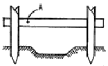
- 띠장
- 규준대
- 규준점
- 규준말뚝
(정답률: 69%)
33. 테라조 바르기의 줄눈 나누기의 크기로 적당한 것은?
- 면적 : 0.9m2 이내, 최대 줄눈 간격 : 1.2m이하
- 면적 : 1.0m2 이내, 최대 줄눈 간격 : 1.2m이하
- 면적 : 1.2m2 이내, 최대 줄눈 간격 : 2.0m이하
- 면적 : 1.5m2 이내, 최대 줄눈 간격 : 2.0m이하
(정답률: 48%)
34. 공장에서 가공 또는 조립을 완료한 철골 부재에 대하여 녹막이 칠을 하여야 할 곳은?
- 조립에 의하여 맞닿는 면
- 콘크리트에 매입되지 않는 부분
- 현장 용접하는 부분
- 고장력 볼트 마찰 접합부의 마찰면
(정답률: 59%)
35. 다음의 강관 및 강관틀 비계에 관한 기술 중 틀린 것은?
- 강관비계의 띠장간격은 1.5m 이하로 설치하되, 첫 번째 띠장은 지상으로부터 2m 이하의 위치에 설치한다.
- 강관틀 비계는 주틀간에 교차가새를 설치하고 최상층 및 5층 이내마다 수평재를 설치한다.
- 강관비계의 비계기둥간의 적재하중은 700㎏ 이하로 한다.
- 강관틀 비계는 수직방향으로 6m, 수평방향으로 8m 이내마다 벽이음을 한다.
(정답률: 59%)
36. 함석잇기 공사에서 직접 못으로 고정하지 않고 거멀접기하는 이유는?
- 못이 보이면 흉하기 때문이다.
- 함석에 대한 온도의 영향을 방지하기 위함이다.
- 녹이 날 염려가 있기 때문이다.
- 경제적인 이유이다.
(정답률: 25%)
37. 유리판 사이에 철선망을 넣은 것으로 방화 또는 진동이 심한 장소에 많이 쓰이는 유리 제품은?
- 연마유리
- 망입유리
- 안전유리
- 판유리
(정답률: 70%)
38. 소규모 철골공사에 많이 사용되며 또한 중량재료를 달아 올리기에 편리한 것으로 폴 데릭(pole derrick)이라고도 불리우는 것은?
- 가이데릭
- 삼각데릭
- 진폴
- 타워크레인
(정답률: 40%)
39. 프리캐스트 철근콘크리트 공사에서 충전용 콘크리트에 대한 설명 중 틀린 것은?
- 물시멘트비는 55% 이하로 한다.
- 슬럼프는 최대 180㎜ 이하로 한다.
- 단위시멘트량의 최소값은 330㎏/m2로 한다.
- 굵은 골재의 최대치수는 20㎜ 이하를 원칙으로 한다.
(정답률: 24%)
40. 다음은 재료의 할증율에 관한 기술이다. 틀린 것은?
- 이형철근 - 3%
- 기와 - 3%
- 붉은벽돌 - 3%
- 슬레이트 - 3%
(정답률: 30%)
3과목: 건축구조
41. 지름 20㎜, 길이 3m의 연강봉을 축방향으로 30kN의 인장력을 작용시켰을때 길이가 1.4㎜ 늘어났고, 지름이 0.0027㎜ 줄어들었다. 이 때 강봉의 프와송수는?
- 3. 16
- 3. 46
- 3. 76
- 4. 06
(정답률: 50%)
42. 그림과 같이 편심하중이 작용하는 기둥에서 기둥단면에 작용하는 최대 응력도의 크기는?
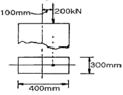
- 3. 87MPa
- 3. 97MPa
- 4. 07MPa
- 4. 17MPa
(정답률: 22%)
43. 그림과 같은 양단 고정보에서 A지점의 반력 모멘트 MA는? (단, 이 보의 휨강도 EI는 일정하다. )
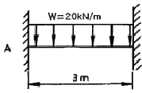
- 10kN・m
- 15kN・m
- 20kN・m
- 25kN・m
(정답률: 44%)
44. 단면의 성질에 관한 설명중 틀린 것은?
- 도심을 지나는 축에 대한 단면 1차 모멘트는 반드시 0 이다.
- 도심을 지나는 축에 대한 단면 2차 모멘트중 최대값과 최소값을 갖는 2개의 축은 반드시 직교한다.
- 도심에서 직교하는 2개의 축에 대한 단면상승 모멘트는 반드시 0 이다.
- 도심에서 직교하는 2개의 축에 대한 단면 2차 모멘트의 합은 일정하다.
(정답률: 56%)
45. 장방형 단면을 가진 보의 단면적이 A, 전단력이 V이면 이보 단면의 최대 전단 응력도는?
- V/A
- 3V/2A
- 4V/3A
- 3V/4A
(정답률: 62%)
46. 콘크리트보의 크리프(creep) 현상에 대한 설명 중 틀린 것은?
- 단윈시멘트량이 많을수록 크다.
- 물시멘트비가 큰 콘크리트를 사용할 때 크다.
- 보양이 나쁠수록 크다.
- 단면의 치수가 클수록 크리프의 최종값은 크다.
(정답률: 35%)
47. 강도설계법에 의한 철근콘크리트의 보설계에서 그림과 같은단면에서 콘크리트에 의한 전단강도 VC는 약 얼마인가? (단, fck = 24MPa, fy = 400MPa, D10 철근1개의 단면적은 71mm2이다. )
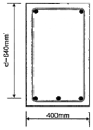
- 150kN
- 180kN
- 210kN
- 244kN
(정답률: 48%)
48. 철근콘크리트보에서 헌치(haunch)를 설치하는 이유에 관한 설명으로 가장 적당한 것은?
- 보의 중앙부 전단파괴를 방지하기 위하여
- 보의 단부에서 휨모멘트 내력과 전단내력을 증가시키기 위하여
- 보의 횡좌굴 방지를 위하여
- 보가 기둥을 고정하는 효과를 높여서 기둥의 안전성을 확보하기 위하여
(정답률: 39%)
49. 건축물의 구조계획에서 구조체 자중의 감소에 따른 이점이 아닌 것은?
- 풍하중에 대한 건물의 전도 방지
- 기둥축력의 감소에 따른 기둥의 단면 감소
- 휨재 설계시 장스팬이 가능
- 경제적인 기초설계
(정답률: 50%)
50. 그림의 단순보에서 보의 단면계수 Z = 1000cm3라면 최대휨 응력도의 크기는?
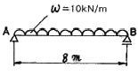
- 20MPa
- 40MPa
- 60MPa
- 80MPa
(정답률: 64%)
51. 그림과 같은 직사각형 단근보를 강도설계법으로 설계할 때 콘크리트의 등가응력블록의 깊이 a는 약 얼마인가? (단, D22철근 1개의 단면적은 387m2, fck = 24Mpa, fy = 400MPa)
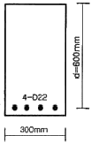
- 91㎜
- 101㎜
- 111㎜
- 121㎜
(정답률: 66%)
52. 철근콘크리트보에서 늑근(Stirrup)이 저항하는 힘과 가장 관계가 깊은것은?
- 압축력
- 전단력
- 휨모멘트
- 인장력
(정답률: 50%)
53. 연약지반의 상부구조에 대한 대책으로서 적절하지 못한 것은?
- 건물을 경량화한다.
- 건물의 중랴운배를 고려한다.
- 이웃 건물과의 거리를 멀게 한다.
- 평면길이를 길게 한다.
(정답률: 46%)
54. 슬래브에 관한 다음 기술 중 잘못된 것은?
- 장선슬래브는 2방향으로 하중이 전달되는 슬래브이다.
- 플랫슬래브는 보가 없으므로 천장고를 낮추기 위한 방법으로도 사용된다.
- 워플슬래브는 일종의 격자시스템 슬래브 구조이다.
- 슬래브의 두께가 구조제한 조건에 따르지 않을 경우 슬래브 처짐과 진동의 문제가 발생할 수 있다.
(정답률: 44%)
55. 그림과 같은 구조물의 휨모멘트도로 맞는 것은?
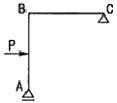
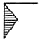
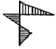
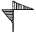
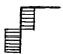
(정답률: 30%)
56. 그림과 같이 빗금친 도형의 밑변을 지나는 X-X축에 대한 단면 1차모멘트의 값은?
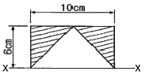
- 30cm3
- 60cm3
- 120cm3
- 180cm3
(정답률: 40%)
57. 강도설계법에 의한 철근콘크리트 설계시 콘크리트의 설계기준 강도 fck = 27MPa일 때 콘크리트의 파괴계수 (fr)값은?
- 2. 46MPa
- 2. 79MPa
- 2. 95MPa
- 3. 27MPa
(정답률: 25%)
58. 스팬(span)이 6m, 단면의 폭 150㎜, 춤 400㎜인 단순보가 나무보일 경우 여기에 실을수 있는 허용 등분포하중은? (단, 나무보의 허용윔응력도 fb = 10MPa이다. )
- 6.9 kN/m
- 7.9 kN/m
- 8.9 kN/m
- 9.9 kN/m
(정답률: 45%)
59. 경간의 길이가 4,000㎜인 단순지지된 1방향 슬래브의 처짐을 계산하지 않는경우의 최소두께는? (단, 리브가 없는 슬래브, fy = 400MPa)
- 200 ㎜
- 220 ㎜
- 235 ㎜
- 250 ㎜
(정답률: 59%)
60. 강도설계법에 관한 설명 중 틀린 것은?
- 탄성이론하에서 이루어진 설계법이다.
- 강도감소계수(ø)는 시공오차, 약산오차 등의 기술적인면을 고려한 안전계수이다.
- 하중계수는 규정된 허용하중이 초과될지도 모를 가능성을 예측한 것이다.
- 서로 다른 재료의 특성을 설계에 합리적으로 반영시키기 어렵다.
(정답률: 40%)
4과목: 건축설비
61. 난방부하 계산시 방위에 따른 손실을 보정하는 경우, 그 값을 가장 많이 보정해야 하는 방위는?
- 동 (E)
- 북동 (NE)
- 남동 (SE)
- 북 (N)
(정답률: 46%)
62. 다음 중 사이폰 작용에 의한 트랩 내의 봉수 파괴를 방지하기 위한 대책으로 가장 알맞은 방법은?(관리자 입니다. 보기 내용이 좀 안맞는것 같네요. 정확한 보기 내용을 아시는 분 께서는 오류 신고를 통하여 내용 작성 부탁 드립니다. 정답은 1번 입니다.)
- 세탁기
- 소변기
- 대변기
- 세면기
(정답률: 35%)
63. 경질 비닐관 공사에 대한 설명으로 옳은 것은?
- 통기관을 설치한다.
- 배수 수직관의 관경을 작게 한다.
- 그리스 포집기를 설치한다.
- 배수펌프를 설치한다.
(정답률: 27%)
64. 균제도에 대한 설명으로 알맞은 것은?
- 색의 분광특성이 색의 보임에 미치는 효과
- 작업대상물의 수평면상에서의 조도의 균일정도를 표시하는 척도
- 전구의 필라멘트가 단선될 때가지의 점등시간
- 어떤 물체에 입사하는 광속과 그 물체에서 반사하는 광속의 비
(정답률: 58%)
65. 공기조화방식 중 단일덕트방식에 대한 설명으로 옳지 않은 것은?
- 2중덕트방식에 비하여 시서리가 적게 들고, 덕트 스페이스도 적게 차지한다.
- 각 실이나 존의 부하변동에 즉시 대응할 수 없다.
- 냉풍과 온풍을 혼합하는 혼합상자가 필요하므로 소음과 진동이 많다.
- 부하특성이 다른 여러 개의 실이나 존이 있는 건물에 적용하기가 곤란하다.
(정답률: 28%)
66. 다음 중 증기난방의 응축수 환수방식에 속하지 않는 것은?
- 중력식
- 상향식
- 기계식
- 진공식
(정답률: 40%)
67. 다음의 공기조화방식 중 전공기 방식에 속하지 않는 것은?
- 단일 덕트 방식
- 멀티 존 유닛 방식
- 유인 유닛 방식
- 이중 덕트 방식
(정답률: 58%)
68. 다음 중 생물화학적 산소요구량을 나타내는 것은?
- COD
- DO
- BOD
- PPM
(정답률: 67%)
69. 다음의 인터폰 설비에 대한 설명 중 틀린 것은?
- 주택용 인터폰은 일반적으로 도어폰 기능을 갖는다.
- 사무용 인터폰 설비의 통화방식 중 상호통화식은 스피커형이 일반적이다.
- 집합주택 관리용 인터폰의 기능으로는 현관문의 개폐기능, 비상 푸시버튼에 의한 비상통보기능 등이 있다.
- 엘리베이터용 인터폰은 상호통화식이 주로 채용되며 반드시 축전지 설비를 설치할 필요는 없다.
(정답률: 69%)
70. 다음 중 옥내소화전서리에 관한 설명으로 옳은 것은?
- 수원은 그 저수량이 옥내소화전의 설치개수가 가장 많은 층의 설치개수에 1.3m2를 고한 양 이상이 되도록 하여야 한다.
- 옥내소화전 노즐선단의 방수압력은 0.1MPa 이상이어야 한다.
- 옥내소화전용 펌프의 토출량은 옥내소화전이 가장 많이 설치된 층의 설치개수에 100ℓ를 곱한 양 이상이어야 한다.
- 송수구는 지면으로부터 높이가 0.5m 이상 1m 이하의 위치에 설치한다.
(정답률: 41%)
71. 조명에 사용되는 광원에 대한 설명으로 옳지 않은 것은?
- 할로겐램프는 백열전구보다 수명이 짧으며 흑화가 자주 발생한다.
- 고압수은램프는 시동에 걸리는 시간이 길다.
- 메탈 할라이드 램프는 고압수은램프의 연색성과 효율을 개선한 방전등이다.
- BL전구(blended lamp)는 수은방전전구와 백열전구의 혼합형 전구이다.
(정답률: 47%)
72. 전기 배선 공사에 사용되는 기구 중 손잡이의 회전에 의해 점멸을 하는 스위치는?
- 로터리 스위치
- 텀블러 스위치
- 푸시버튼 스위치
- 캐노피 스위치
(정답률: 56%)
73. 500명을 수용하는 극장에서 실내 농도를 0.15%로 유지하는데 필요한 환기량은? (단, 1인당 CO2 발생량은 15ℓ/h 이고, 외기 CO2 농도는 0.03%이다. )
- 5,000m3/h
- 6,250m3/h
- 10,000m3/h
- 12,500m3/h
(정답률: 43%)
74. 자계의 방향이나 도체에 흐르는 전류 방향이 바뀌면 도체가 움직이는 방향도 바뀌게 된다. 이와 관련하여 도체가 움직이는 방향을 알 수 있는 법칙은?
- 렌츠의 법칙
- 플레밍의 오른손 법칙
- 플레밍의 왼손법칙
- 패러데이 법칙
(정답률: 48%)
75. 실내기온 26℃(절대습도 Xi = 0.0107㎏/㎏'), 외기온 33℃(절대습도 Xo = 0.0184 ㎏/㎏'), 1시간당 침입 공기량이 500m3일 때 침입외기에 의한 잠열부하는?
- 1192W
- 3211W
- 3576W
- 4768W
(정답률: 22%)
76. 기구배수 부하단위(f.u.d)가 1에 해당하는 기구는?
- 세면기
- 대변기
- 소변기
- 욕조
(정답률: 50%)
77. 아파트의 경우 스프링클러헤드를 설치하는 천장 등의 각 부분으로부터 하나의 스프링클러 헤드까지의 수평거리는 최대 얼마 이하로 하여야 하는가?
- 1.7 m
- 2.3 m
- 2.5 m
- 3.2 m
(정답률: 23%)
78. 다음 중 공기를 가열할 때 변화하지 않는 것은?
- 건구온도
- 절대습도
- 습구온도
- 상대습도
(정답률: 60%)
79. 다음의 제연구역에 관한 설명 중 틀린 것은?
- 통로상의 제연구역은 보행 중심선의 길이가 70m를 초과하지 않아야 한다.
- 하나의 제연구역은 면적은 1,000m2 이내로 한다.
- 하나의 제연구역은 2개 이상의 층에 미치지 않도록 한다.
- 하나의 제연구역은 직경 60m 원내에 들어갈 수 있어야 한다.
(정답률: 25%)
80. 직접가열식 급탕 방법에 대한 설명으로 틀린 것은?
- 간접가열식에 비해 보일러의 열효율이 낮다.
- 보일러 내부에 방식처리를 강구할 필요가 있다.
- 급탕온도가 고르지 않게 될 경우가 있다.
- 급탕하는 건물의 높이에 따라 보일러는 높은 압력을 필요로 한다.
(정답률: 62%)
5과목: 건축관계법규
81. 6층 이상의 층의 거실 면적의 합계가 7000m2인 병원에 설치하여야 하는 승용 승강기의 최소 대수는? (단, 8인승 기준)
- 2대
- 3대
- 4대
- 5대
(정답률: 35%)
82. 다음 중 사용승인 후 5년이 경과된 연면적 900m2의 건축물을 용도변경할 경우 부설 주차장을 추가로 확보하지 아니하고 용도를 변경할 수 있는 경우는?
- 문화 및 집회시설 중 예식장의 용도로 변경하는 경우
- 무도학원의 용도로 변경하는 경우
- 문화 및 집회시설 중 극장의 용도로 변경하는 경우
- 미술관의 용도로 변경하는 경우
(정답률: 41%)
83. 다음 중 건축법상 유형에 따른 도로의 최소 너비 기준으로 옳지 않은 것은?
- 보행과 자동차 통행이 가능한 도로 : 4m
- 막다른 도로의 길이가 10m 미만인 도로 : 2m
- 막다른 도로의 길이가 10m 이상 35m 미만인 도로 : 3m
- 막다른 도로의 길이가 35m 이상인 도로 : 5m (도시지역이 아닌 읍・면 지역인 경우)
(정답률: 58%)
84. 다음의 노외 주차장에 관한 기준 내용 중 ( ) 안에 알맞은 것은?
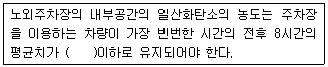
- 20 피피엠
- 30 피피엠
- 50 피피엠
- 70 피피엠
(정답률: 30%)
85. 다음 중 노외주차장의 주차형식에 따른 차로의 너비가 가장 작은 것에서 큰 순서대로 올바르게 나열한 것은? (단, 출입구가 2개인 경우)
- 평행주차 - 직각주차 - 교차주차
- 평행주차 - 교차주차 - 직각주차
- 45도 대향주차 - 60도 대향주차 - 교차주차
- 45도 대향주차 - 평행주차 - 60도 대향주차
(정답률: 52%)
86. 건물의 피난층 외의 층으로부터 통하는 직통계단을 2개소이상 설치해야 하는 것은?
- 피난층 외의 층이 층당 4세대인 공동주택의 용도에 쓰이는 층으로서 그 층의 당해 용도에 쓰이는 거실의 바닥면적의 합계가 300m2인 것
- 피난층 외의 층이 영화관의 용도에 쓰이는 2층으로서 그 층의 관람석의 바닥면적의 합계가 200m2인 것
- 피난층 외의 층이 병원의 용도에 쓰이는 2층으로서 그 층의 당해 용도에 쓰이는 거실의 바닥면적의 합계가 200m2인 것
- 피난층 외의 층이 아동관련시설의 용도에 쓰이는 2층으로서 그 층의 당해용도에 쓰이는 거실의 바닥면적의 합계가 200m2인 것
(정답률: 63%)
87. 방화지구 안에서 주요구조부 및 외벽을 내화구조로 하지 아니할 수 있는 건축물의 용도는?
- 단독주택
- 도매시장
- 오피스텔
- 청소년수련관
(정답률: 50%)
88. 다음 중 구조기술사 등의 구조계산에 의하여 구조의 안전을 확인하여야 하는 대상 건축물은?
- 연면저이 1000m2 인 건축물
- 기둥과 기둥 사이의 거리가 30m인 건축물
- 높이가 21m인 건축물
- 층수가 15층인 건축물
(정답률: 40%)
89. 다음 중 비상용 승강기 승강장의 구조에 관한 기준 내용으로 옳지 않은 것은?
- 승강장의 바닥면적은 승강장이 옥외에 설치되는 경우 비상용 승강기 1대에 대하여 6제곱미터 이상으로 할 것
- 승강장은 각 층의 내부와 연결될 수 있도록 하되, 그 출입구(승강로의 출입구를 제외한다)에는 각종 방화문을 설치할 것
- 벽 및 반자가 실내에 접하는 부분의 마감재료는 불연재료로 할 것
- 피난층이 있는 승강장의 출입구로부터 도로 또는 공지에 이르는 거리가 30미터 이하일 것
(정답률: 27%)
90. 전용주거지역 또는 일반주거지역안에서 건축물을 건축하는 경우 건축물의 높이 4미터 이하인 부분은 정북방향으로의 인접대지 경계선으로부터 최소 얼마이상 띄어 건축하여야 하는가?
- 1 m
- 2 m
- 3 m
- 5 m
(정답률: 18%)
91. 다음 중 내화구조가 아닌 것은?
- 작은 지름이 20㎝인 철근콘크리트조 기둥
- 두께가 10㎝인 철근콘크리트조 바닥
- 철골조 계단
- 철재로 보강된 망입유리로 된 지붕
(정답률: 50%)
92. 다음 중 같은 건축물 안에 함께 설치할 수 없는 것은?
- 공동주택과 의료시설
- 숙박시설과 위락시설
- 공장과 위험물저장 및 처리시설
- 노인복지시설과 소매시장
(정답률: 25%)
93. 노상주차장의 구조ㆍ설비기준에 관한 일반적인 내용 중 옳지 않은 것은?
- 종단경사도가 4%를 초과하는 도로에 설치하여서는 아니된다.
- 너비 7m 미만의 도로에 설치하여서는 아니된다.
- 주간선도로에 설치하여서는 아니된다.
- 자동차전용도로에 설치하여서는 아니된다.
(정답률: 50%)
94. 다음은 오피스텔의 난방설비를 개별난방방식으로 하는 경우에 대한 설명이다. ( )안에 알맞은 내용은?
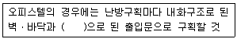
- 1급 방화문
- 2급 방화문
- 을종방화문
- 갑종 방화문
(정답률: 60%)
95. 공사감리자가 고사시공자에게 상세시공도면의 작성을 요청할 수 있는 건축공사의 연면적 기준은?
- 2,000m2 이상
- 3,000m2 이상
- 4,000m2 이상
- 5,000m2 이상
(정답률: 34%)
96. 부설주차장 설치 대상 시설물 종류에 따른 설치 기준이 옳지 않은 것은?
- 제2종 근린생활시설 - 시설면적 300m2당 1대
- 위락시설 - 시설면적 100m2당 1대
- 판매시설 - 시설면적 150m2당 1대
- 창고시설 - 시설면적 400m2당 1대
(정답률: 44%)
97. 다음 중 건축법상 “건축”에 해당하지 않는 것은?
- 개축
- 재축
- 이전
- 대수선
(정답률: 67%)
98. 다음 중 자주식주차장의 분류에 속하지 않는 것은?
- 지하식
- 지평식
- 기계식
- 건축물식
(정답률: 39%)
99. 건축관계법규에 따라 피뢰설비를 설치하여야 하는 대상 건축물의 높이 기준으로 옳은 것은?
- 10 m
- 20 m
- 25 m
- 30 m
(정답률: 64%)
100. 배연설비의 설치기준으로 옳지 않은 것은?
- 관련 규정에 의하여 건축물에 방화구획이 설치된 경우에는 그 구획마다 1개소 이상의 배연창을 설치할 것
- 배연창의 유효면적은 1m2이상으로 할 것
- 배연구는 연기감지기 또는 열감지기에 의하여 자동으로 열 수 있는 구조로 하되, 손으로 열고 닫지 못하도록 할 것
- 배연구는 예비전원에 의하여 열 수 있도록 할 것
(정답률: 44%)
따라서, 이유를 설명하면, "계단 설치 계획에 대한 설명 중 옳지 않은 것은?"이므로 "계단을 내려갈 때 핸드레일은 왼손으로 잡도록 계획한다."가 옳지 않은 것이다.